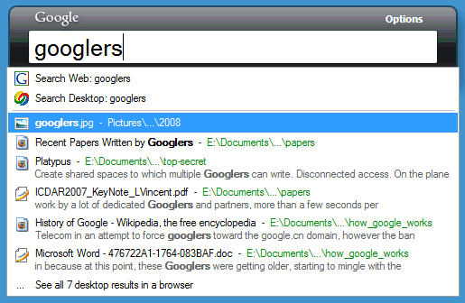

비공식적으로 인터넷 치매 환자에다가 게으름뱅이라고 생각하는 calmglow로서는 구글 데스크탑이 업무나 개인 용도로 얼마나 요긴하게 사용되는 지 모른다. 며칠 전에 작성한 자료조차도 그것을 어디에 보관하고 있었는지 까먹어버리는 덕에 구글 데스크탑 이전에는 그것을 찾아 다니는데 바빠 업무에 많은 어려움을 겪기도 한다. 그러나 그건 구글 데스크탑이 나오기 전 이야기. 구글 데스크탑 이후에는 작성한 문서나 보관할 자료 정리가 훨씬 편해졌다. 대충 큰 범주 어딘가에다가 넣어버리기만 하면 나중에 몇몇 생각나는 '키워드'로 찾으면 되니까.
그런데 구글 데스크탑의 단점은 성능이다. 비교적 사용자가 놀고 있을 때에만 인덱싱 작업을 한다고는 하지만 성능에 민감한 사용자들은 구글 데스크탑의 무거움을 용납하지 못한다. 그래서 좋다는 것은 인정해도 그 성능 때문에, 그리고 찜찜한 구석이 있는 보안 문제 때문에 설치를 꺼리기도 한다. 아래에 소개할 내용은
구글 데스크탑 최적화 관련된 외국 페이지를 정리한 것이다.

구글 데스크탑의 버전이 높아지면서 갈수록 기능이 많아지고 결국은 성능에 대한 문제가 조금씩 불거지고 있다. 이제 우리는 구글 데스크탑의 최적화에 대해 고민해야할 때다.
먼저 성능 최적화를 위해 구글 데스크탑의 환경설정 화면으로 가야한다.
1. 필요한 파일 유형만 색인에 포함시켜라.특히 '웹 기록'같은 경우는 상당히 많은 양의 디스크 자원을 소모한다. 굳이 자신이 지난날에 본 웹페이지들을 검색하고 싶다면 불여우(FireFox)의 막강한 history기능이나 IE(인터넷 익스플로어)의 내장 검색기능을 사용하면 어떨까?
만약 아웃룩등의 이메일 클라이언트를 사용하고 있다면 구글 데스크탑은 아웃룩의 이메일 뿐만 아니라 캘린더나 주소까지도 색인작업을 한다. 하지만 아웃룩이 자체적으로 제공하는 검색기능으로도 왠만한 작업은 가능하다.
2. 색인에 필요없는 디렉토리는 제외시켜라구글 데스크탑은 전체 디렉토리와 전체 드라이브를 검색한다. 하지만 우리가 검색하고자 하는 것은 보통 별도의 디렉토리에 있는 경우가 많다.
C:\Program Files\
C:\Windows\
등의 디렉토리나 혹은 별도로 시스템이 사용하는 temp디렉토리등을 제외시켜서 성능을 향상시킬 수 있다. 그런데 만약 google desktop의 ctrl+ctrl를 통한 편리한 검색기능을 통해 애플리케이션 실행 기능을 사용하고 있다면 위의 두 디렉토리는 제외시키면 안될 것이다.
3. 색인작업을 하지 않아도 될 파일 확장자 제외시켜라.색인작업을 하지 않아도 될 파일 확장자 목록은 환경설정 화면에서 설정할 수 없다. 이것은 레지스트리를 통해서만 확인하고 변경할 수 있는데 그 레지스트리 주소는 다음과 같다.
HKEY_CURRENT_USER\Software\Google\Google Desktop\file_extensions_to_skip
위의 키의 기본 제외 확장자는 tmp, temp, moztmp, log, pst, ost, oab, nk2, dat, 000, pf, xml, obj, pdb, tlb, pcc, pch, exp, res, map, sconsign, msf 이며 여기에 bak,chk,old,gid,prv,wbk,dll 등을 포함시킬 수 있고 마찬가지로 애플리케이션 실행 기능을 사용하고 싶지 않다면 exe나 com파일도 등록할 수 있겠다.
4. 구글 통합 검색 기능을 해제하라.웹검색을 할 때에도 이 '구글 통합 검색'기능을 enable하게 되면 자동으로 데스크탑 검색까지 해준다. 이 기능은 사실 매우 편리한 기능이기는 하지만 만약 순수하게 웹검색 기능만을 사용하고자 하고 성능을 고려한다면 이 옵션을 해제함으로써 웹 검색 성능을 높일 수 있다.
이렇게 색인 관련 옵션을 변경하더라도 과거의 불필요한 정보는 그대로 구글 데스크탑이 간직하고 있다. 만약 완벽한 초기화를 원한다면 구글데스크탑을 종료한 후 C:\Documents and Settings\사용자id\Local Settings(숨어있는 디렉토리)\Google\Google Desktop\ 내의 디렉토리를 삭제하고 다시 구글 데스크탑을 실행한 후 트레이 아이콘 오른쪽 마우스를 누르고 색인 재생성 명령을 실행하면 된다.


최근 덧글